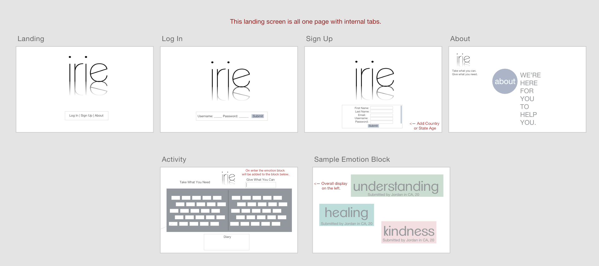
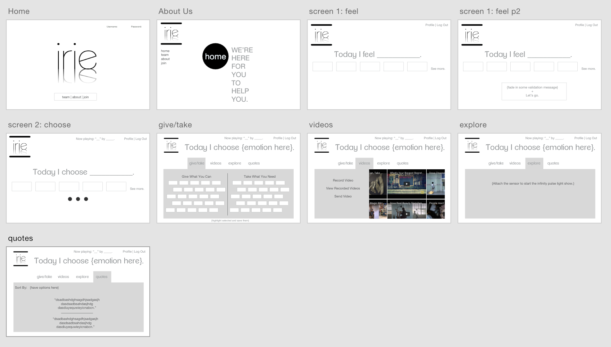
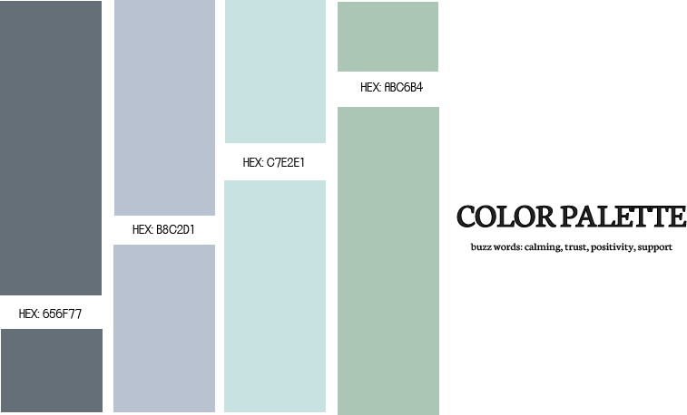
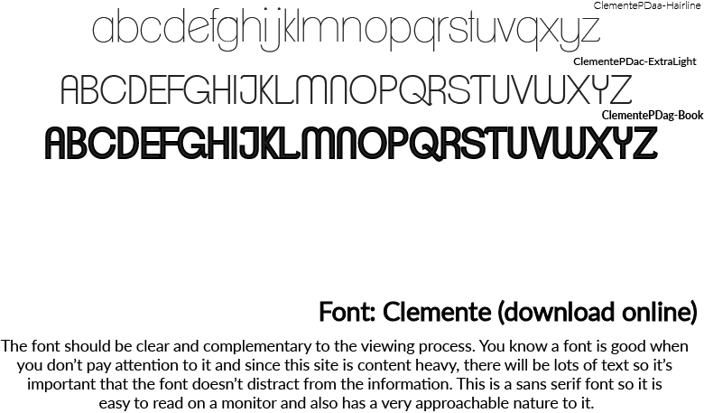
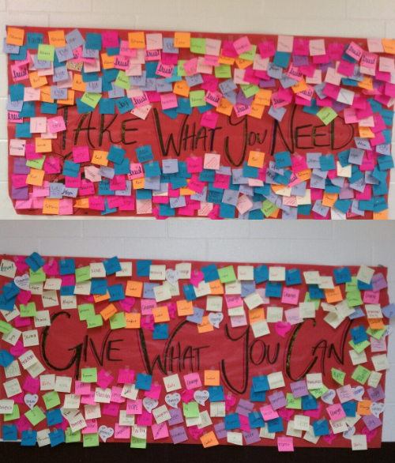
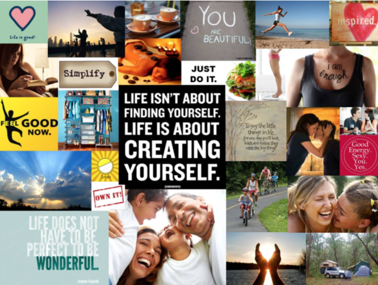
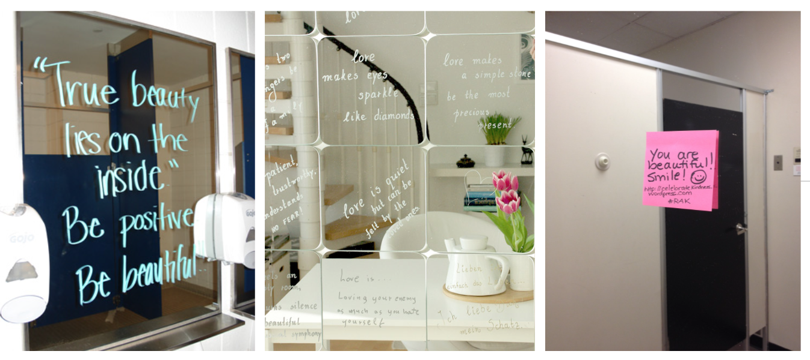
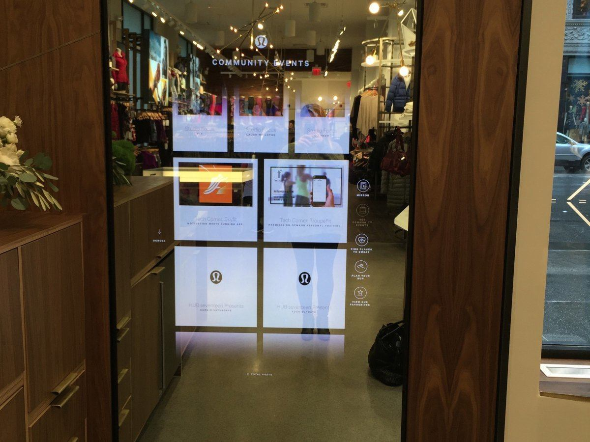
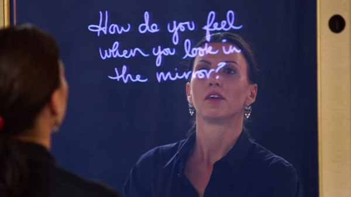

"No one is in charge of your happiness except you."
"No one can possibly know what is best for you other than yourself."
If this is all said to be true, then why don’t we have a platform to help guide us through self help, self revelation and self empowerment? As a result, I am going to create a website that helps guide the user through a relevant path to get them the type of help they need in the moment. In this way, we can use technology to help guide effective self help to increase positivity in times of need. Think of this as a mood ring, but a mood ring website that helps one realize where they are at emotionally and guides them to a better place. I want the website to instill a sense of trust and empowerment in the user. I want them to be able to get into a reflective state where they become their greatest advocate leaving the site in a better place than how they were when they entered it.
In the future, I hope to develop this website further so it can be the basis and structure for my interactive mirror, irie, which I am creating for my thesis project.
Theme and Subject
The questions I am aiming to answer are:
Can we find a way for humans to provide effective self, yet technology guided, help while increasing positivity in times of need?
How can we use one's current mood as an input for personalized self help through an interactive mirror that ultimately increase one's positivity?
Content and Scope
This site will include HTML, CSS, and javascript and jQuery. Because self help is personal, a series of questions will be asked and depending on input, certain outputs will be shown.
MVP Highlighted Feature
Take what you need. Give what you can.
Technical Scope for MVP
For this site I will know how to do the following:
Input validation
Pin Board: grab objects from board, distribute objects to board
Other: Log In / User Dashboard / Local Storage
Future Features
The list below includes current working features; the ones at the top are most important/feasible and as you move down teh list the features are harder to employ and not as necessary for this iteration of the site.
Dashboard:
Today I feel _______.
Today I choose ______.
Inputs selecting current mood can be inputs for respective outputs like certain music, visuals, etc
Quote of the day.
"Take what you need. Give what you can."
Save messages/recorded local videos for when one feels certain things that can be played back.
Play relevant pre-recorded videos that were sent by others.
Technical scope for these added features:
API for embedding music (ideally Googleplay bc of emotion input)
Display certain interface based on validation
24 hour site quote change
Record and play relevant videos
Design/Creative Direction
MVP Wireframe
I used the new Adobe UX platform called Adobe Experience Design (xD) to create some very preliminary wireframes/ockups for my site. These overall designs show the minimal, content-heavy, and organized aspects I will use when designing my actual site. The logo I designed below is intentionally simplistic since the site is suppose to be about the user so I wanted to keep the intricacies of the site design simple. The logo resembles a mirror/reflective state of the logo name, which is symbollic of the sites mission in relation to the larger system.

Future Site Wireframe
Here is an overall wireframe/mockup if I were to to develop this site further with all of the features on my extended list of features.

Creative Direction & Design Proposal
When researching what colors were best for the overall look and feel of my site I had to keep two ideas in mind: 1) finding colors that would compliment the idea of a southing, calming and supportive system and 2) (thinking long term) which colors will show up on a mirror monitor should this project be applicable to my thesis.
According to Houzz, calming colors for wall decor include: dark gray-blue, soft gray, and icy blue, soft neutral green, and lavender. I also did more research on colourlovers.com and was able to find other color pallets that complimented the southing nature I want to employ. I noticed that the colors tend to be light with a medium level of saturation. This is how I was able to come up with my colors.
After doing research on other interactive mirror spaces, it seems like white and light colors seem to show best on the dark surface.
Overall, the key is evoking a sense of trust, balance, and calmness, without being boring.

Font was also an aspect of design that was important for me to keep in mind. This site will be content heavy and it is importnat to me as a designer that my font choice not distract from the overall content of the site. This font is simple, without being boring or something too familiar.

User stories based on two different personas from target userbase
A little over a year ago, my best friend, Katherine, passed away in a scuba diving accident. When I was thinking about a user story to incorporate that represents a personal from my target user base I immediately thought of Katherine. Katherine was one of the most positive people in my life. Her room was filled with positive quotes and she always sent me inspirational stories and messages. Beyond just helping others, Katherine knew how to help herself, which is a skill that many of us struggle with today. Everyday Katherine was somebody who tried very hard to be in self aware and touch with her emotions and moods. Like everybody else in this world, Katherine had a lot on her plate. Instead of her having to create her own system and platform for self help, this site would’ve been able to help organize her self help in a productive system.
While Katherine would understand the power of a platform like this, Phil (a true persona and stock photo on the right) needs a platform like this in his life, but this site will be his first introduction to the power of self help. Phil struggles with depression and see’s a therapist weekly despite his busy schedule, but his mom has to force him to go. Phil understands his illness, but he Phil is quiet in his sessions with his counselor because he is embarrassed about his state and doesn’t feel comfortable sharing how he feels with a stranger. Phil benefits from this site because he can use this site as a platform for self expression in a way where he is comfortable expressing himself and on his own time.
Research
Inspiration Research





Other Research
Because of the intricacy and layered aspect to this project, I decided to separate my research into categories.
Moods: Everybody has moods, but being aware of the state one is in can help foster a greater sense of positivity and progress.
http://www.webmd.com/balance/guide/choosing-to-be-happy?page=2
Therapists: Therapists are used to help understand ones mental state as well as help one take active steps to being the best version of onesself.
http://www.dbsalliance.org/site/PageServer?pagename=wellness_brochures_psychotherapy
Self help: Some of the self help websites include articles that one can read, but they are less interactive and personal in nature. I hope to take this a step further and use the information presented in the articles to create interactive exercises to help the user.
http://tinybuddha.com, http://www.huffingtonpost.com/2014/06/13/turning-bad-day-around_n_5489113.html, http://www.myrkothum.com/self-reflection-how-to-do-it-right/
http://www.lifehack.org
Self help continued: Some of the other self help websites are formatted in a survey manner, where you feel like you are being diagnosed or tested. Instead, I hope to use basic ways of identifying somebody’s current mood in order to provide adequate, light, and meaningful feedback.
http://psychcentral.com/quizzes/
Research Question:
Can we find a way for humans to provide effective self, yet technology guided, help while increasing positivity in times of need? In addition, how can community and crowdsourcing become a part of this platform in a non-invasive, complimentary way?
Goal: The goal of this site was to create a digital version of the Take What You Need / Give What You Can therapeutic self help activity that is common in doctors offices, specifically, therapists and counseling offices.
My Why: The physicality of the in-person activity is limiting. By digitizing this system, there are a series of new affordances for example: privacy, approachability, ease, convenience, repetition/increased usage, ability to share, community, and storage.
Design: The design was very intentional. The overall layout resembles the physical iteration of the activity and I wanted to keep this convention in my design. I wanted it to be approachable for all ages and technology levels. The colors were meant to be calming and complimentary to the idea of easing through the site. I considered having the Instagram photos rotate towards the top of the page, but I found that was too distracting and made looking at other people's strong points overpower and distract from the encouragement the photos are suppose to provide.
Deliverables:
MVP: Take/Give Layout (html/css) + Draggable/Droppable (jQuery UI)
Final Product: Take/Give Layout + Draggable/Droppable + Droppable Feedback (input validation) + Instragam API (API using client ID and passing in the tag)
Lessons Learned: There are several ways of achieving the same task. Sometimes you have to abandon something that you know works to get server systems to work together. (Also, patience is key!)
Project Work Cited
http://www.houzz.com/ideabooks/56675610/list/set-the-mood-5-colors-for-a-calming-bedroom
Google Images: best colors for interactive mirrors
http://www.colourlovers.com/palettes/search?query=comfort